Ethan Stalnikiewicz
Marketing, produit et IA créative
Diplômé d'Audencia, avec Centrale Nantes et l'École de Design Nantes Atlantique : un mastère qui forme des managers de l'innovation, capables de mener une offre de la stratégie jusqu'au prototype, avec des ingénieurs et des designers.
Première expérience de chef de produit junior dans un groupe international. Utilisateur quotidien de l'IA générative pour accélérer la création de contenus, la veille et l'analyse.
- 50 % de temps de création de contenu en moins chez Sercel, grâce à l'IA générative
- +10 000 € économisés chaque année, en remplaçant les séances photo par des images IA
- 27 000 lignes de code environ pour Orpheus, mon atelier d'écriture de chansons
- +15 morceaux composés, du jazz à l'électro, et un album prévu en 2027
01 Parcours
01.1 Sercel
Chef de produit junior
Proposition de valeur et lancement marketing d'un nouveau produit phare aux salons internationaux EAGE et IMAGE : stand, logistique, brochures, vidéos de démonstration.
Outils d'aide à la vente : brochures techniques, présentations commerciales, fiches produits.
Articles de blog et contenus scientifiques rédigés avec l'IA pour les leads et les clients. Liens : [À REMPLIR]
Synthèses graphiques et présentations pour la direction.
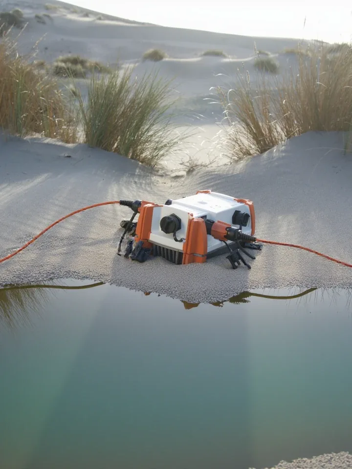
- No-go Étude go/no-go d'un dispositif innovant de détection d'impact (R&D, retours clients, conformité UE) : lancement annulé, plusieurs millions d'euros de coûts d'industrialisation et de marketing évités.
- 50 % de temps de création de contenu en moins, après un benchmark de 5 IA génératives de texte et de 3 IA d'image.
- +10 000 € économisés chaque année, en générant les images par IA à la place des séances photo. Voir des exemples.
- +30 services et produits passés en veille chez 4 concurrents, pour le positionnement, les arguments commerciaux et la stratégie SEO.
01.2 360CrossMedia
Chef de projet et de production
- +30 articles pour les magazines d'entreprise « Luxembourg Official » et DUKE, produits de bout en bout, du contact des intervenants au bouclage.
- 4 newsletters ciblées sur Zoho Campaign : segmentation des fichiers de contacts, suivi des taux d'ouverture, de clic et de conversion.
- +10 pages web conçues et intégrées sur WIX, et support CRM.
- +30 interviews en studio : prise de son, prise de vue, retouche et montage (Suite Adobe, DaVinci Resolve).
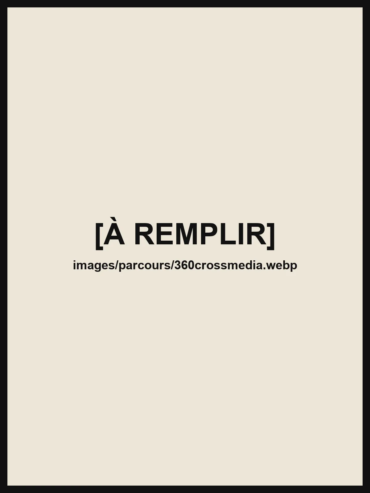
01.3 Audencia
Mastère Spécialisé Marketing, Design et Création
- 3 écoles : Audencia, l'École Centrale de Nantes, qui co-accrédite le mastère, et l'École de Design Nantes Atlantique. Managers, ingénieurs et designers y apprennent à innover ensemble par le design thinking.
- 4 blocs de compétences : définir une stratégie d'innovation (prospective, besoins des usagers), manager une équipe projet pluridisciplinaire (design thinking, créativité, facteurs humains), développer une offre de produit ou de service innovante, et piloter le prototypage, l'ingénierie et le design (marques et marketing).
- RNCP 7 Titre de niveau 7 « Manager de l'innovation ».
Un projet annuel avec une entreprise partenaire, encadré par ses directions marketing, design et R&D. Des outils de CAO, de prototypage rapide et d'immersion virtuelle.
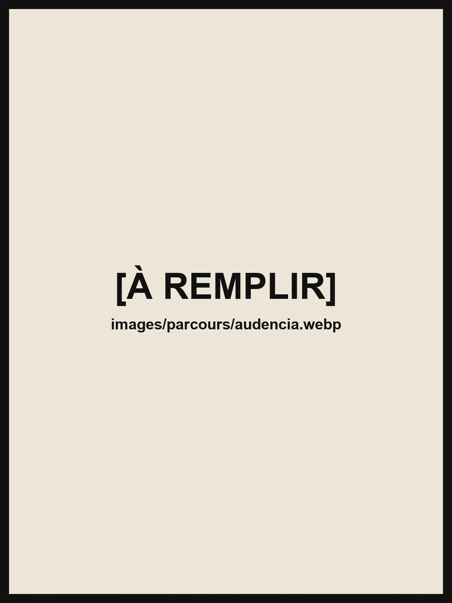
Compétences
Stratégie de marque et positionnement, proposition de valeur, lancements produits et go-to-market, outils d'aide à la vente, veille concurrentielle.
Campagnes multicanales, salons internationaux, emailing et segmentation, contenus et stratégie SEO, CRM, suivi de KPIs.
Design thinking, expérience utilisateur (UX), stratégie d'innovation, prototypage, gestion de projets pluridisciplinaires, études go/no-go, business model et ROI.
Certification Google Cloud Generative AI Leader. Vertex AI, Gemini, Google AI Studio, prompt engineering, agents IA, Claude Code, ComfyUI.
Excel avancé, PowerPoint, Apollo.io.
Français (langue maternelle), anglais C1 (TOEFL 106/120).
02 Musique
Plus de 15 morceaux composés, entre cinématique, jazz, pop, électro et rock. Des bandes originales pour des courts-métrages d'étudiants en cinéma, et un album prévu en 2027.
-
[À REMPLIR]
-
[À REMPLIR]
-
[À REMPLIR]
-
[À REMPLIR]
03 Logiciels
Orpheus
Un atelier d'écriture de chansons, des paroles jusqu'aux accords. Projet vibe coded : conçu et dirigé par moi, code écrit en conversation avec Claude Code. Né sous Windows, porté ensuite sur Mac.
Il compte les syllabes chantées, pas les pieds, et vérifie que les paroles se chantent sur la mélodie.
Une carte des accords en 2D et en 3D : on compose en cliquant d'un accord à l'autre, et chaque enchaînement s'entend.
Il trouve les accords de n'importe quel morceau, MIDI ou MP3, grâce à une IA audio qui tourne en local (Demucs, Beat This!, BTC, CREPE).
Il dialogue avec un clavier MIDI et avec Logic Pro, grâce à un plugin Audio Unit fait maison.
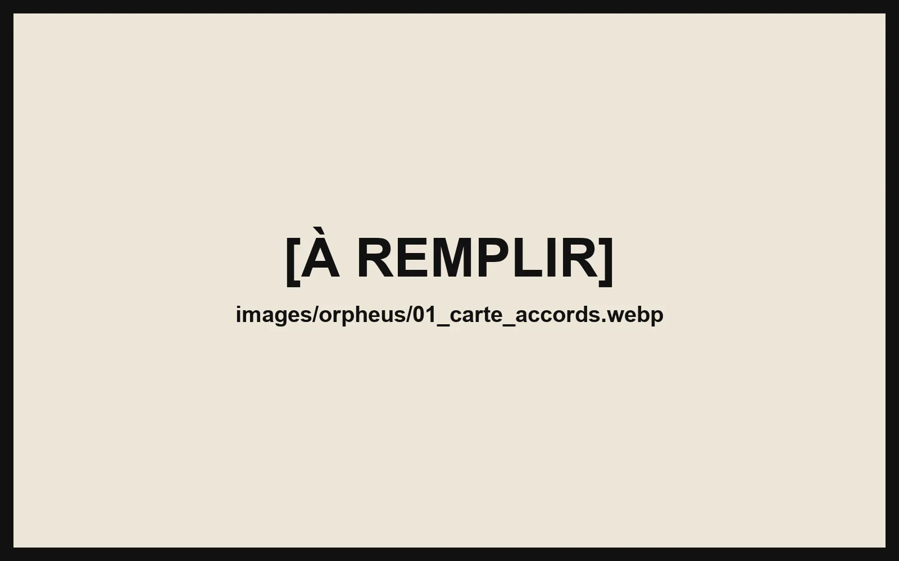
La carte des accords
Composer en cliquant sur une carte d'harmonie, couleurs par fonction et flèches pondérées par le style.
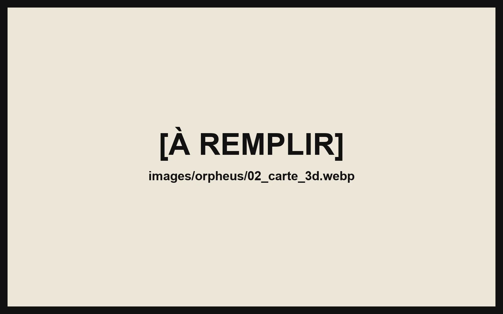
La carte en 3D
Les accords en sphères de verre, reliés par les probabilités du style.
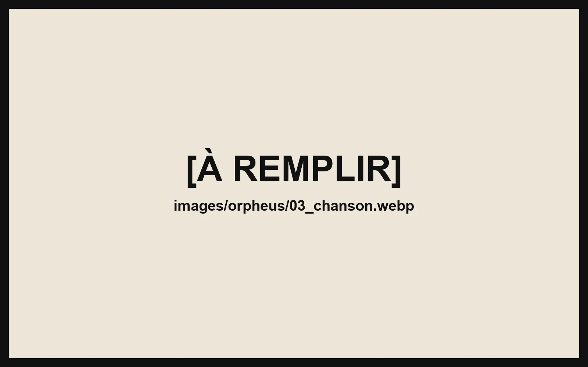
L'onglet Chanson
Il compte les syllabes chantées, repère les temps forts et superpose les couplets.
04 Images IA
Un workflow en 6 étapes, avec des modèles open source qui tournent sur du matériel local :
- l'entrée de l'utilisateur ;
- l'enrichissement du prompt ;
- le conditionnement du modèle ;
- les paramètres d'échantillonnage ;
- le raffinement ;
- l'upscale, jusqu'à la très haute résolution.
Des images promotionnelles publiées sur les réseaux sociaux et dans des articles de magazine.
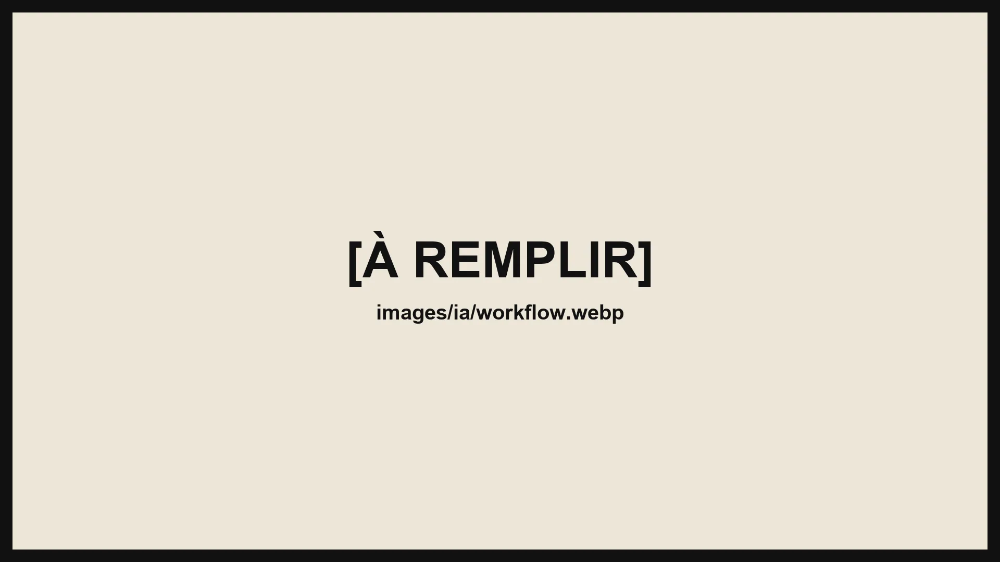
Visuels de marque
Capteurs sismiques et équipes de terrain : le type d'images générées chez Sercel à la place des séances photo.
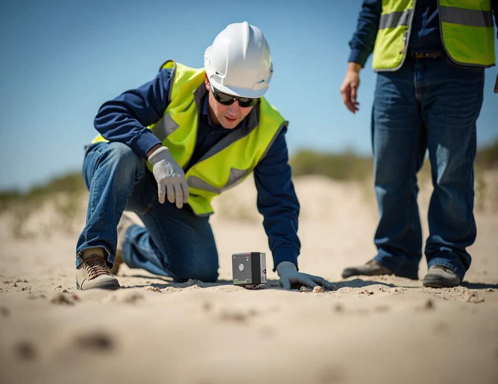
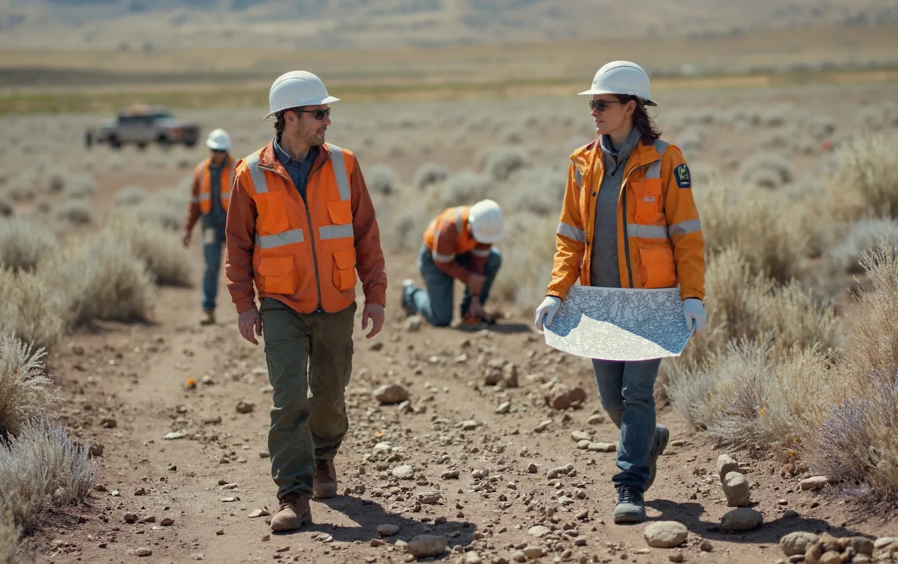
Recherches libres
Des explorations personnelles, d'un style à l'autre : peinture, voxel, dessin animé, photographie de nuit.
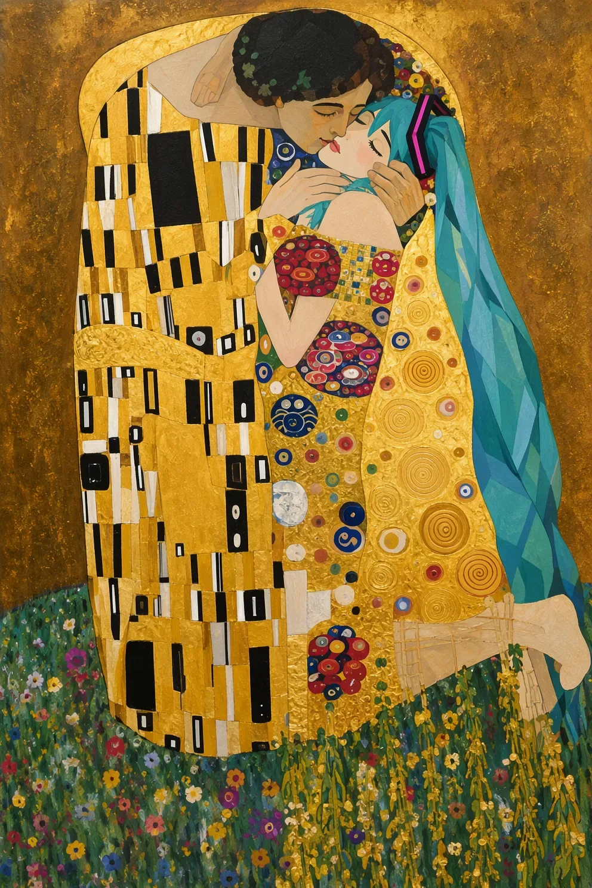
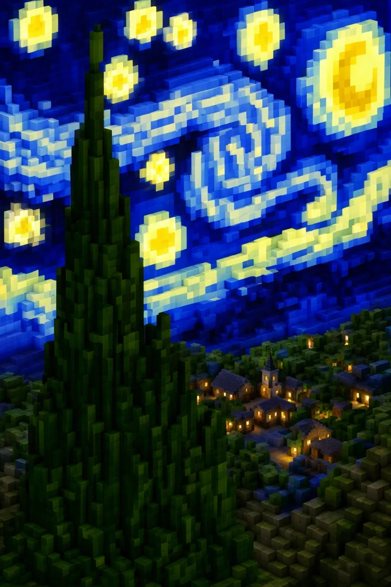
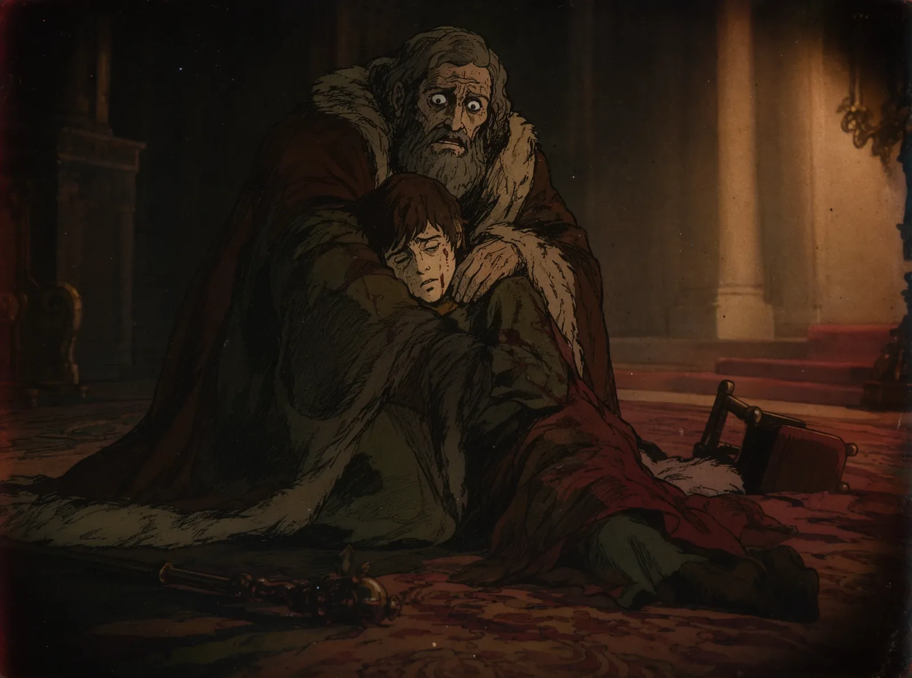
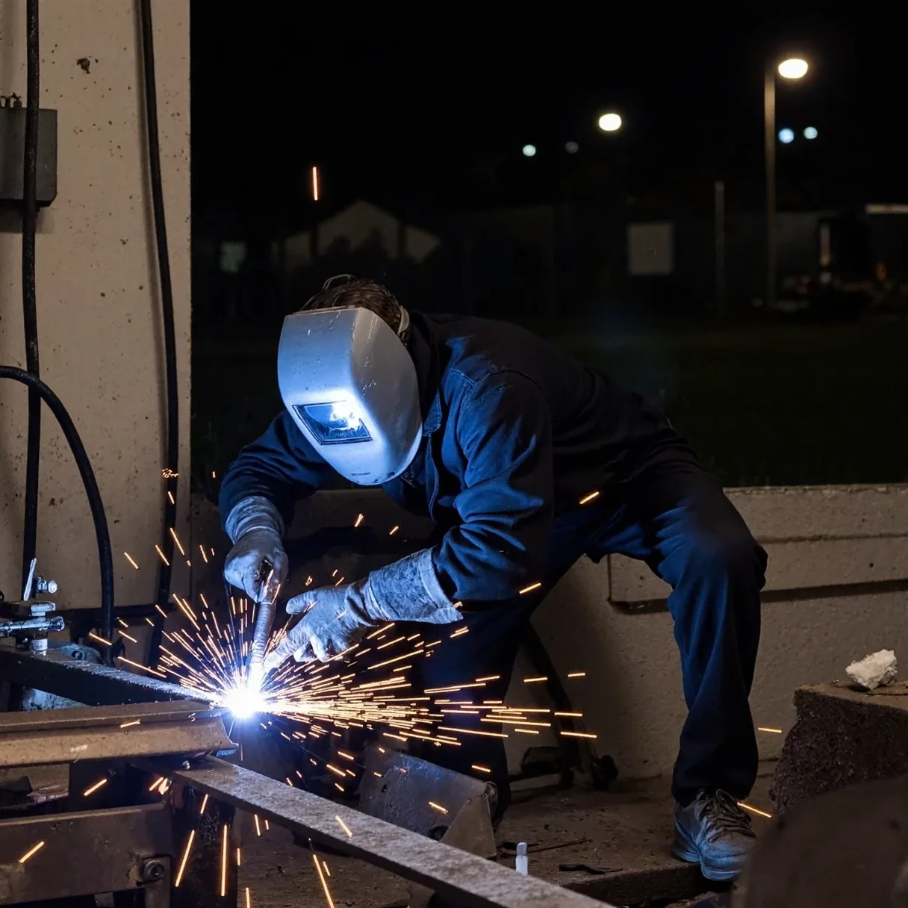
05 Outils
- Photoshop
- InDesign
- Lightroom
 DaVinci Resolve
DaVinci Resolve HubSpot
HubSpot- Zoho
 Semrush
Semrush
Contact
- ethanstal@gmail.com
- LinkedIn : [À REMPLIR]